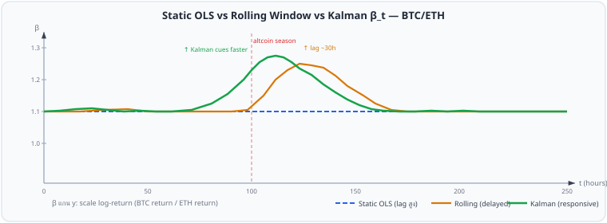
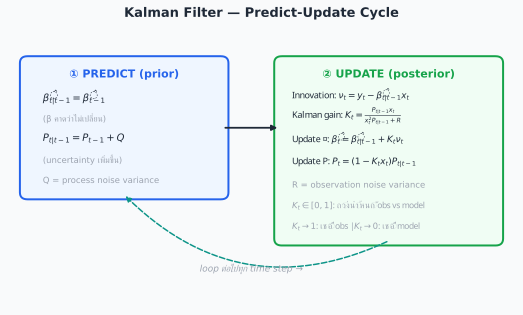
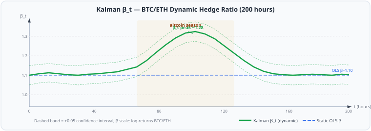
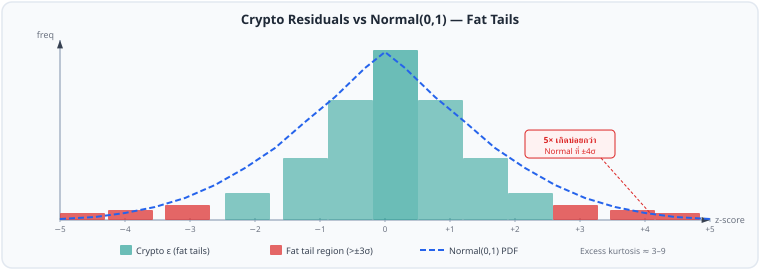
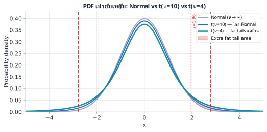
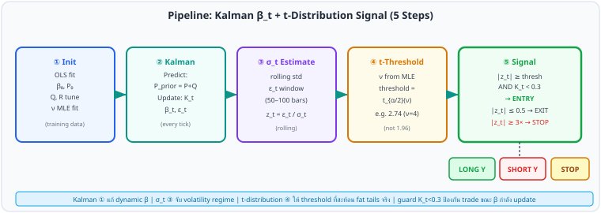

ใน บทที่ 4 เราประมาณ β ด้วย OLS บน lookback window เดียว เช่น 250 วัน โมเดลถือว่า β ไม่เปลี่ยนแปลงตลอดช่วงเวลานั้น แต่ในทางปฏิบัติ hedge ratio ของ crypto pairs เช่น BTC/ETH ขยับตามรอบตลาด
Rolling-window β เป็นทางออกแรก: คำนวณ β ใหม่ทุกวันบน lookback window ที่เลื่อนไป แต่ยังเลือก window ได้ยาก และยัง lag

รูป 23.1 — Kalman β_t (เขียว) ตอบสนองรวดเร็วกว่า rolling window (เหลือง) โดยไม่มี lag สูง
Kalman Filter แก้ทั้งสามปัญหาในคราวเดียว: ปรับ β ทุก step, ไม่ต้องเลือก window, และ update ทันทีเมื่อ data ใหม่เข้า
Kalman Filter คือ recursive Bayesian estimator — ในแต่ละ step เราประมาณ state ล่าสุดจากการผสม prediction จาก model กับ observation ใหม่ น้ำหนักที่ให้แต่ละส่วนขึ้นอยู่กับความไม่แน่นอนสัมพัทธ์ของทั้งสอง
กำหนด state equation และ observation equation:

รูป 23.2 — วงจร Predict-Update ของ Kalman Filter ทำซ้ำทุก time step
K_t อยู่ใน range ที่เหมาะสม (สำหรับ log-return inputs ที่ x_t ≪ 1):
นำทฤษฎีในข้อ §23.2 มาใช้กับ BTC/ETH pair จาก บทที่ 4 §4.2b — BTC เป็น y_t (dependent), ETH เป็น x_t (independent)
Pair: BTC/ETH จาก บทที่ 4 §4.2b | ρ = 0.9745 | AR(1) φ = 0.9602 | Half-life = 17h
Input scale: ใช้ log-returns (r_t = Δlog P_t) ไม่ใช่ log-prices — ทำให้ innovation มี mean ≈ 0 โดยไม่ต้อง fit intercept และ K_t อยู่ใน range ที่ guard condition ทำงานได้
Log-return OLS β: β̂₀ ≈ 1.10 (BTC return ≈ 1.10 × ETH return) — ค่านี้ต่างจาก β ใน Ch.4 §4.2b (log-price β ≈ 0.04–0.06) อย่างมาก เพราะเป็นคนละ quantity: log-price β วัด hedge ratio ของ price level (BTC ≈ 25× ETH → β ≈ 1/25 ≈ 0.04) ขณะที่ log-return β วัดว่า BTC return เป็นกี่เท่าของ ETH return (≈ 1.0–1.2 เพราะทั้งคู่ขึ้นลงคล้ายกัน) ใช้ log-return β เฉพาะใน Kalman filter แบบ Ch.23 เท่านั้น — สำหรับ spread construction ε = log(P_A) − β·log(P_B) ให้ใช้ log-price β จาก Ch.4 เสมอ
Kalman parameters: Q = 1×10⁻⁵ (β เปลี่ยนช้า), R = 0.001 (noise ปานกลาง)
Initial conditions: β̂₀ = 1.10 (ค่าจาก OLS log-returns), P₀ = 0.01
หลังจากวน loop เสร็จ beta_series คือ time series ของ β_t ที่ปรับตาม data ทุก step โดยอัตโนมัติ สำหรับ BTC/ETH log-returns β_t โคจรรอบ ~1.10 ± 0.1 ตามรอบตลาด

รูป 23.3 — β_t ของ Kalman Filter (เขียว) เลื่อนขึ้นระหว่าง altcoin season แล้วกลับสู่ระดับปกติ ขณะที่ OLS คงที่ตลอด (log-return scale: β ≈ 1.0–1.2)
เมื่อใช้ Kalman β_t แทน OLS β:
Kalman Filter มีพลัง แต่ต้องเข้าใจข้อจำกัดก่อนนำไปใช้จริง
| Parameter | ค่าต่ำ | ค่าสูง | Rule of thumb |
|---|---|---|---|
| Q (process noise) | β เปลี่ยนช้า — smooth แต่ lag | β ตอบสนองเร็ว — แต่ noisy | เริ่มที่ 1e-5 ถึง 1e-4; หาจาก grid search |
| R (observation noise) | เชื่อ price มาก — β วิ่งตาม | เชื่อ model มาก — β stable | ประมาณจาก Var(ε) ของ OLS residual |
| P₀ (initial P) | confident เรื่อง β₀ | uncertain เรื่อง β₀ | ถ้าไม่แน่ใจ ใส่ P₀ = 1.0 แล้ว burn-in |
สามารถประมาณ Q และ R จาก data โดยตรงด้วย Expectation-Maximization (EM) บน log-likelihood ของ state-space model — ไม่ต้อง tune ด้วยมือ แต่ต้องการ training window ยาวพอ (อย่างน้อย 500+ observations) ห้องสมุด Python ที่ใช้ได้: pykalman, statsmodels.tsa.statespace
เส้นทางจาก §23.1–23.4 ครอบคลุม Dynamic β ด้วย Kalman Filter ครบถ้วน ส่วนต่อไป §23.5–23.8 จะแก้อีกปัญหาหนึ่งที่เกี่ยวข้องกัน — fat tails ของ ε ที่ทำให้ z-score แบบ Normal ไม่น่าเชื่อถือ
ε ของ crypto pairs และ options residuals (เช่น ε_RR จาก §22.3) มักมีหางที่หนากว่าการแจกแจงปกติมาก — ปัญหานี้ทำให้ z-score ที่คำนวณจาก Normal distribution ให้ false signals มากเกินจริง
Kurtosis (excess) = E[(ε/σ)⁴] − 3

รูป 23.4 — ที่ ±4σ crypto residuals เกิดถึง 5× บ่อยกว่า Normal — z-score 2.0 แบบปกติให้ false entries มากเกิน
ถ้าใช้ z-score threshold = ±2.0 โดยสมมติ Normal distribution:
ทางออก: ใช้ t-distribution ที่มี degrees of freedom ν ต่ำ เพื่อสะท้อน fat tails ที่แท้จริง
t-distribution (Student's t) มีรูปทรงคล้าย Normal แต่มีหางหนักกว่าที่ปรับได้ด้วยพารามิเตอร์ degrees of freedom ν (nu)

รูป 23.5 — t(ν=4) มีหางหนักกว่า Normal ชัดเจน — area นอก ±1.96 ใหญ่กว่า 2× สำหรับ crypto ν ≈ 3–6
| ν (degrees of freedom) | ลักษณะ | Excess Kurtosis | Variance |
|---|---|---|---|
| ν = 2 | หางหนักมาก | ไม่มีที่สิ้นสุด | ไม่มีที่สิ้นสุด |
| ν = 3 | หางหนา | ไม่มีที่สิ้นสุด | 3.0 |
| ν = 4 | fat tails — โมเมนต์ที่ 4 ไม่มีที่สิ้นสุด | ไม่มีที่สิ้นสุด | 2.0 |
| ν = 5 | fat tails — เหมาะ crypto มาก | 6.0 | 1.67 |
| ν = 6 | moderate fat tails | 3.0 | 1.5 |
| ν = 10 | ใกล้ Normal | 1.0 | 1.25 |
| ν → ∞ | Normal distribution | 0 | 1.0 |
ε_RR จาก §22.3 ของ BTC options มี distribution ที่ fat-tailed เนื่องจาก IV spikes ระหว่าง market stress:
ความแตกต่างใน threshold นี้มีผลโดยตรงต่อจำนวนครั้งที่ strategy เข้า trade
| Distribution | Two-tailed α=5% | Two-tailed α=2% | Two-tailed α=1% |
|---|---|---|---|
| Normal (z) | 1.960 | 2.326 | 2.576 |
| t (ν = 30) | 2.042 | 2.457 | 2.750 |
| t (ν = 10) | 2.228 | 2.764 | 3.169 |
| t (ν = 6) | 2.447 | 3.143 | 3.707 |
| t (ν = 4) | 2.776 | 3.747 | 4.604 |
| t (ν = 5) | 2.571 | 3.365 | 4.032 |
| t (ν = 3) | 3.182 | 4.541 | 5.841 |
ถ้าใช้ t(ν=4) แทน Normal สำหรับ two-tailed α=5% (threshold แบบ "95% confidence"):
หา ν ที่เหมาะสมกับ ε โดยใช้ Maximum Likelihood Estimation:
Input: ε_RR series จาก 1 ปีของ BTC 25Δ Risk Reversal (≈250 daily observations)
MLE result: ν̂ ≈ 4.3 → ยืนยันว่า fat-tailed
New threshold: t_{0.025}(ν=4.3) ≈ 2.72 (แทน 1.96)
ผลต่อ strategy:
ตารางและตัวอย่างข้างต้นแสดงว่า threshold ที่ถูกต้องสำหรับ crypto ε ต้องสูงกว่า 1.96 อย่างมีนัยสำคัญ ส่วน §23.8 จะแสดงผลกระทบนี้ต่อ trading signals จริงว่าต่างกันมากแค่ไหนในทางปฏิบัติ
ส่วนนี้แสดงผลต่างเชิงปฏิบัติของการใช้ Normal vs t-distribution ในการสร้าง trading signals บน pipeline เดิม
| Scenario | Normal (z=2.0) | t(ν=4, t=2.78) | ผล |
|---|---|---|---|
| ε_RR = −12% (σ_RR=2%, θ=−8%) | z = (−12−(−8))/2 = −2.0 → ENTER | t = −2.0 < 2.78 → WAIT | t กรอง marginal signal |
| ε_RR = −15% (σ_RR=2%, θ=−8%) | z = −3.5 → ENTER | t = −3.5 > 2.78 → ENTER | ทั้งคู่เห็นตรงกัน |
| ε_BTC = +2.3σ (half-life event) | z = 2.3 → ENTER | t = 2.3 < 2.78 → WAIT | t กรอง noise trade |
| ε_BTC = +3.1σ (IV spike event) | z = 3.1 → ENTER | t = 3.1 > 2.78 → ENTER | ทั้งคู่เห็นตรงกัน |
| ε_PCP = −1.8σ (PCP violation) | z = 1.8 → WAIT | t = 1.8 → WAIT | ทั้งคู่ผ่าน — ถูกต้อง |
§23.5–23.8 แสดงว่า t-distribution ให้ threshold ที่สะท้อน tail risk ของ crypto จริงมากกว่า ส่วนต่อไป §23.9 จะรวม Kalman Filter กับ t-distribution เป็น pipeline เดียว
Pipeline ต่อไปนี้รวม 2 เทคนิคจาก §23.1–23.8 เข้าด้วยกัน ให้ signal ที่แม่นยำและน่าเชื่อถือกว่า static β + Normal threshold

รูป 23.6 — Pipeline 5 ขั้นตอน: Kalman ให้ β_t แม่นยำ → t-distribution กำหนด threshold ที่เหมาะ
บทนี้สร้างขึ้นบนฐานของหลายบทก่อนหน้า และเพิ่มเติมให้บทที่จะใช้ต่อ:
| บท | เชื่อมโยงกับ ch23 |
|---|---|
| บทที่ 3 §3.9 | Walk-forward calibration — ใช้สำหรับ Q/R tuning ของ Kalman |
| บทที่ 4 §4.2b | OLS β เป็นค่าเริ่มต้น β₀ ของ Kalman Filter |
| บทที่ 5 §5.6 | Shapiro-Wilk: ถ้า p ≥ 0.05 ใช้ Normal; ถ้า p < 0.05 ใช้ t-distribution |
| บทที่ 5 §5.7 | Crossing rate φ: AR(1) coefficient เดียวกับที่ใช้ประมาณ Half-life |
| บทที่ 10 §10.3 | Robust Z-score (MAD): ทางเลือกแทน σ-based z เมื่อ outlier มาก |
| บทที่ 12 | Kelly criterion: ปรับ position size ตาม win rate จาก t-distribution threshold |
| บทที่ 18 §18.8 | ε_PCP: ตัวอย่าง fat-tailed options residual ที่ใช้ t-distribution |
| บทที่ 22 §22.3 | ε_RR: Risk Reversal residual — ตัวอย่างหลักสำหรับ MLE ν ใน §23.7 |
| บทที่ 22 §22.5 | ε_VRP: Vol Risk Premium — ประโยชน์จาก Kalman เพราะ β_IV เปลี่ยนตาม term structure |
ตั้ง Q/R ratio โดย cross-validate บน out-of-sample period — อย่า tune บน in-sample เพียงอย่างเดียว Q สูงเกินไปทำให้ β noisy; Q ต่ำเกินไปทำให้ lag สูงเหมือน static OLS. สำหรับ BTC/ETH pair ที่ดี ให้เริ่มต้นที่ Q=0.0001, R=0.001 แล้วปรับตาม half-life ที่ต้องการ. ใช้ t-distribution กับ ν=4–6 สำหรับ crypto spreads — Normal distribution underestimates tail risk อย่างน้อย 3× ใน regime สูง.
Kalman Filter assume linear Gaussian state-space — ทั้งสองข้อนี้พังในตลาด crypto: (1) ความสัมพันธ์ BTC/ETH ไม่เป็น linear เสมอในช่วง high-volatility; (2) residuals ไม่ Gaussian มี fat tails รุนแรง. ผลคือ Kalman gain K_t อาจสูงเกินไปในช่วงที่ variance พุ่ง → β_t กระโดดผิดทิศทาง → ε_t ผิด → เข้า trade ผิด side. วิธีป้องกัน: cap Kalman gain ไม่ให้เกิน K_max = 0.3 และใช้ t-filter แทน standard Kalman ในช่วงที่ residuals fat-tailed.
โจทย์ 23.1 — Kalman Filter 1 Step (log-returns)
BTC/ETH pair โดยใช้ daily log-returns (r_t = Δlog P_t)
ให้ค่า: β̂₀ = 1.10, P₀ = 0.01, Q = 1×10⁻⁵, R = 0.001
Data ใหม่: y₁ = 0.032 (BTC log-return = +3.2%), x₁ = 0.028 (ETH log-return = +2.8%)
(ก) คำนวณ P_{1|0} (prior covariance)
(ข) คำนวณ S (innovation variance) และ Kalman gain K₁
(ค) คำนวณ β̂₁ (updated estimate), P₁, และ ε₁
(ก) P prior:
P_{1|0} = P₀ + Q = 0.01 + 0.00001 = 0.01001
(ข) S และ K₁:
S = x₁² × P_{1|0} + R = 0.028² × 0.01001 + 0.001 = 7.85×10⁻⁶ + 0.001 ≈ 0.001008
K₁ = P_{1|0} × x₁ / S = 0.01001 × 0.028 / 0.001008 = 2.803×10⁻⁴ / 0.001008 ≈ 0.278
สังเกต: K₁ = 0.278 < 0.3 → guard condition ผ่าน β กำลังอัพเดทในอัตราปกติ
(ค) Update β̂₁, P₁ และ ε₁:
Innovation ν₁ = y₁ − β̂₀ × x₁ = 0.032 − 1.10 × 0.028 = 0.032 − 0.0308 = 0.0012
β̂₁ = β̂₀ + K₁ × ν₁ = 1.10 + 0.278 × 0.0012 = 1.10 + 0.000334 ≈ 1.1003
P₁ = (1 − K₁ × x₁) × P_{1|0} = (1 − 0.278 × 0.028) × 0.01001 = (1 − 0.00778) × 0.01001 ≈ 0.009932
ε₁ = y₁ − β̂₁ × x₁ = 0.032 − 1.1003 × 0.028 = 0.032 − 0.030808 ≈ 0.001192
สังเกต: β เปลี่ยนน้อยมาก (1.10 → 1.1003) เพราะ innovation เล็ก → ε ≈ 0.0012 สมเหตุสมผล
โจทย์ 23.2 — MLE ประมาณ ν
ε_RR ของ BTC 25Δ Risk Reversal มีสถิติต่อไปนี้จาก 252 observations:
Mean = 0.0%, Std = 2.1%, Skewness = −0.3, Kurtosis (excess) = 5.8
(ก) จาก kurtosis = 5.8 ประมาณ ν คร่าวๆ ได้เท่าไร? (ใช้สูตร excess kurtosis = 6/(ν−4) สำหรับ ν > 4)
(ข) ถ้า ν ≈ 5 ให้คำนวณ two-tailed threshold ที่ α=5% (ใช้ตารางใน §23.7)
(ค) เปรียบเทียบกับ Normal z = 1.96 — threshold ต่างกันกี่ %?
(ก) ประมาณ ν:
Excess kurtosis = 6/(ν−4)
5.8 = 6/(ν−4)
ν−4 = 6/5.8 ≈ 1.034
ν ≈ 5.03 → ประมาณ ν ≈ 5
(ข) Threshold ที่ α=5%:
จากตารางใน §23.7: ค่าจริง t(ν=5, p=0.975) = 2.571 (scipy: t.ppf(0.975, df=5))
หมายเหตุ: linear interpolation ระหว่าง ν=4 (2.776) และ ν=6 (2.447) ให้ค่า ≈ 2.61 ซึ่งใกล้แต่ไม่ตรง — แนะนำใช้ scipy หรือ t-table ที่มีครบทุก ν
(ค) เปรียบเทียบ:
Increase = (2.571 − 1.960) / 1.960 × 100% ≈ 31% เข้มกว่า
หมายความว่า ε_RR ต้องห่างจาก mean มากกว่า 31% จึงจะนับเป็น signal ที่ valid
โจทย์ 23.3 — เปรียบเทียบ Normal vs t Signal
BTC/ETH pair: ε_t = +2.4σ (คำนวณจาก Kalman β_t), ν = 4 สำหรับ t-distribution
(ก) Normal (threshold = 1.96): เข้า trade หรือ wait?
(ข) t(ν=4) (threshold = 2.78): เข้า trade หรือ wait?
(ค) ถ้าหลังจากนี้ ε เพิ่มขึ้นเป็น +3.2σ — ทั้งสองระบบตัดสินใจอย่างไร?
(ก) Normal: 2.4 > 1.96 → SHORT Y (Enter)
(ข) t(ν=4): 2.4 < 2.78 → WAIT — ยังไม่ถึง threshold
(ค) ε = +3.2σ:
Normal: 3.2 > 1.96 → SHORT Y (Enter)
t(ν=4): 3.2 > 2.78 → SHORT Y (Enter)
ทั้งสองระบบเห็นตรงกัน — แต่ t ช้ากว่า 1 step — สำคัญคือ 42% ของ signal ที่ Normal เห็น (โซน 1.96–2.78) จะไม่ถูกนับใน t-distribution
โจทย์ 23.4 — Full Pipeline
ให้ข้อมูล BTC/ETH: ε_RR series มี ν = 4, σ_RR = 2%, θ_RR = −8%
Observe ε_RR = −14.5% (RR_25Δ = −14.5%) พร้อมกับ Kalman gain K_t = 0.18
(K_t มาจาก Kalman Filter ที่ track β_IV ของ RR spread ตาม pipeline ใน §23.9)
(ก) คำนวณ z_t (ใช้ mean-adjusted ε)
(ข) เปรียบเทียบกับ t(ν=4) threshold = 2.776 — ควร enter trade ไหม?
(ค) ถ้า K_t = 0.45 แทน — pipeline ตัดสินใจอย่างไร?
(ก) z_t:
ε_t = ε_RR − θ_RR = −14.5% − (−8%) = −6.5%
z_t = ε_t / σ_RR = −6.5% / 2% = −3.25
(ข) Entry decision (K_t = 0.18):
|z_t| = 3.25 > 2.776 ✅ (t-threshold ผ่าน)
K_t = 0.18 < 0.3 ✅ (β stable, ไม่อยู่ระหว่าง fast update)
→ LONG RR: Buy 25Δ Call + Sell 25Δ Put (คาด RR กลับสู่ −8%) พร้อม delta-hedge ทันที
(ค) ถ้า K_t = 0.45:
|z_t| = 3.25 ผ่าน threshold แต่ K_t = 0.45 > 0.3 ❌ (β กำลัง update เร็ว)
→ WAIT — pipeline block entry เพราะ β_t กำลัง adjust ต่อ regime change อยู่ ควรรอ K_t ลดลงก่อน
Ch.23 Advanced: Kalman Filter & t-Distribution | ← Ch.22: Options-Based Stat Arb